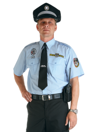

Ahoj detektive. Dnes budeš mít za úkol objasnit vraždu majitele
autoservisu. Při vyšetřování si musíš všímat každého detailu, aby jsi
obvinil správného vraha.
Hodně štěstí!
Mrtvý: Alfréd Kolejný
Věk: 48 let
Rodina: ženatý, 8 dětí
Bydliště: mjr. Plíška 652, Modřany, Praha 12
Povolání: majitel autoservisu, který si nevede moc dobře
Trestní rejstřík: V roce 2008 přišel o řidičský průkaz na dva roky
za rychlost
Způsob smrti: 7 ran tupým předmětem do hlavy. Vražedná zbraň se
nenašla, otisky prstů také ne. Čas a datum smrti pátek 6. května v
21:25
Svědkové: Kolem 21:15 slyšeli hádku dvou mužů a následně rány. Kolem
21:35 ze servisu odjelo auto oběti (Škoda Citigo, SPZ: 4A5 5685), na
řidiče neviděli.
Z průzkumu místa činu jsi objevil možné spojení s těmito lidmi:
Jaroslav Malý, Karel Kojný, Arnošt Pardubický
Jméno: Jaroslav Malý
Věk: 58 let
Rodinný stav: svobodný
Bydliště: Hospodská 445, Praha 4
Povolání: nezaměstnaný, nemá moc peněz
Trestní rejstřík: V roce 2004 byl ve vězení na 18 měsíců za napadení a
ublížení na zdraví.
Alibi: V den vraždy byl v hospodě do 19:00, poté šel s ostatními
štamgasty na fotbal, kde byl do 22:00 a zachytila ho zde bezpečnostní
kamera
Možný motiv: žádný
Dovednosti: Řidičský průkaz nemá, ale řídit umí, nevejde se do malých
aut
Jméno: Karel Kojný
Věk: 32 let
Rodinný stav: neuvedeno
Bydliště kpt. Anděla 5596, Modřany, Praha 4
Povolání: majitel konkurenčního autoservisu, který prosperuje, má dost
peněz
Trestní rejstřík: čistý
Alibi: podle jeho výpovědi byl do 21:26 v hospodě. Pak šel domů.
Svědky nemá
Možný motiv: konkurenční boj
Dovednosti: vlastní řidičský průkaz, nikdy nebyl pokutován za
rychlost, tzv. sváteční řidič, jezdí velmi pomalu
V den vraždy měli otevřeno jen do osmi večer.
Jméno: Arnošt Pardubický
Věk: 27 let
Rodinný stav: vdovec
Bydliště: Bohatých 554, Braník, Praha 4
Povolání: realitní makléř
Trestní rejstřík: 12 pokut za rychlost
Alibi: v den vraždy byl doma, svědky nemá
Možný motiv: jeho žena i dítětem měli nehodu v autě, které měl opravit
Kolejný, ale práci svěřil učni a Kolejný práci nezkontroloval a to
podle techniků mohlo způsobit nehodu.
Díky tvému nesprávnému obvinění jsi poslal do vězení nevinného
člověka. Zde strávil 4 roky. Po přezkoumání byl osvobozen, získal 10
milionů korun jako odškodné a tvoje kariéra u policie skončila.
Proč nemohl vraždit? Motiv k vraždě neměl, nevejde se do malých aut,
což Škoda Citigo je, má perfektní alibi.
Zatknul jsi nevinného člověka!
Po tom co jsi zatknul nevinného člověka byl policií převezen do
věznice, aby si odpykal svůj trest ve výši 20 let. Tuto skutečnost
psychicky nezvládl a v cele spáchal sebevraždu oběšením prostěradlem
pověšeným o kliku dveří. Po jeho smrti byl případ přezkoumán a bylo
zjištěno, že původní obviněný nebyl vrah a ty jsi u policie skončil.
Proč nemohl vraždit? Motiv k vraždě neměl, protože nemusel vést
konkurenční boj, když se mu dařilo a Kolejnému ne, alibi sice neměl,
ale vzhledem k tomu, že nebyly jiné důkazy, které by svědčili proti
němu, tak byl nevinný.
Chystáš se zatknout správného člověka!
Vypadá to, že tvoje pátrání bylo úspěšné. Zkus ho zatknout u něho
doma, ale radši si dej pozor. Pravděpodobně se mu moc chtít nebude,
tak může být agresivní!

Počet životů: 20
Počet životů: 20
Nepodařilo se ti splnit úkol
Podezřelý byl příliš silný a podařilo se mu způsobit ti taková
zranění, která nebyla slučitelná s životem. Snažili se ti pomoci
celosvětové kapacity, ale i tak jsi zemřel a dostal jsi pohřeb s
vojenskými poctami.
Podařilo se ti splnit úkol
Tvé roky výcviku se vyplatily. Po intenzivním dvaceti minutovém boji
se ti povedlo porazit vraha, který se ke všemu přiznal. Vraždil
protože kvůli lenosti Kolejného přišla o život jeho žena a dítě.
Použil klíč na kola jako vražednou zbraň kterou poté hodil do Vltavy.
Po vleklém soudu byl uvězněn na Mírově, kde bude do konce svého
života, ještě k tomu na samotce. Ty jsi byl povýšen a vyznamenán.